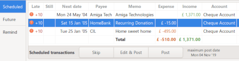

Using the Scheduled transaction feature
Scheduled transactions will allow you to automate the repetitive transaction input like bills, subscriptions, insurances or taxes. You setup the transaction once by creating or use an existing template transaction, then set a few parameters to organize the scheduled insertion. HomeBank will inform you when the transaction is ready to be inserted or will insert it automatically for you.
Step 2: Configure the insertion rules and options
A) choose if you Post pending transaction when the program start
By default, there is an option into the preference that will run the scheduled transactions insertion every time you open your HomeBank file, each transaction will be inserted under some condition:
- the due date is reached (compared to the Maximum Post Date)
- the account is not empty
- the amount is not equal to 0
Those last two option enables you to manage the variable scheduled transactions, for amount variation for example. They will not be posted automatically, and no edit popup will shows during the Post pending scheduled transactions at program start, what would be confusing with no context or window behind.
B) Choose the scheduler mode
You can set the scheduler mode into the file properties dialog, this dialog can also be reached with 2 menus: Manage > Wallet and Transaction/Set scheduler...
With the option you choose, a Maximum Post Date will be computed, and automatic post will occur until this date, included.
Step 3: Check and manually manage
In the main window, at bottom, a list of scheduled transaction can be displayed, it's a summary of every pending scheduled transaction post.
If a scheduled transaction is late, you will see a warning icon with the number of post late in a maximum of 10. If the overdue is more than 10 posts, it will shows +10.

You are also able to manually manage the scheduled transaction from here with Skip, Edit & Post or Post with some toolbar buttons below the list.
A small info icon with a tooltip that display on rollover reminds you about the automatic insertion status and also the Maximum Post Date.
A filter enables to restrict the view to:
- This/Next month
- Next 30, 60, 90 days
- Maximum Post Date
- All
 Note that Late transactions are ALWAYS showed
Note that Late transactions are ALWAYS showed
Al last you have a menu to copy to clipboard or Print the schaduled listview content.